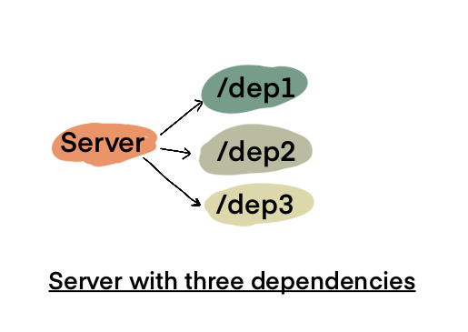

Dependency Mock Server & Black Friday Preparation
Last year while preparing for Black Friday our team had an interesting challenge:
Some of our downstream services1 had proper setup to provide environments/APIs to load test.
This meant will have to configure our systems based on hopeful estimates based on last minute estimates and until then, we would could only sit idle. This wasn't appealing for obvious reasons of doing a hackjob and having a firefighting mode during Black Friday/Cyber Week.
Proposed Solution: Dependency Mock Server
The solution I came up with and which we used was to have a Mock Server that served endpoints similar to our dependencies and return dynamic responses based on request payload.
